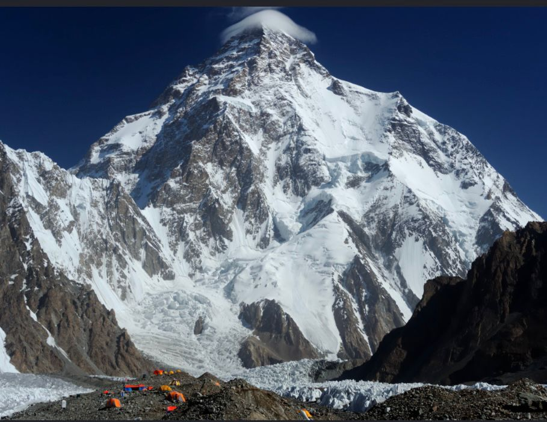
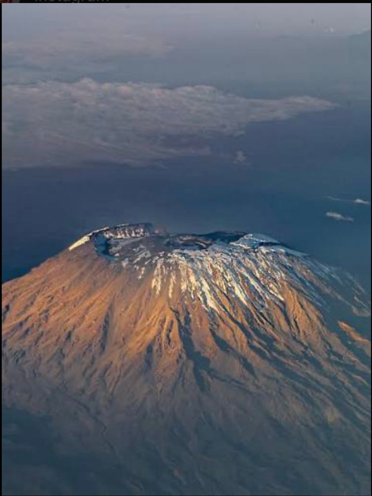
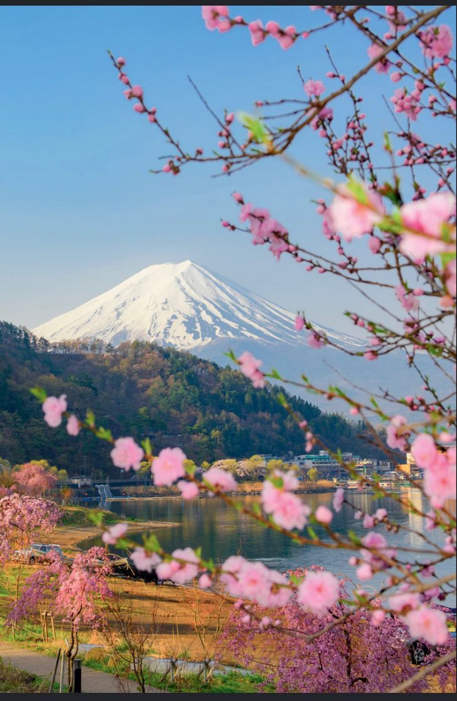
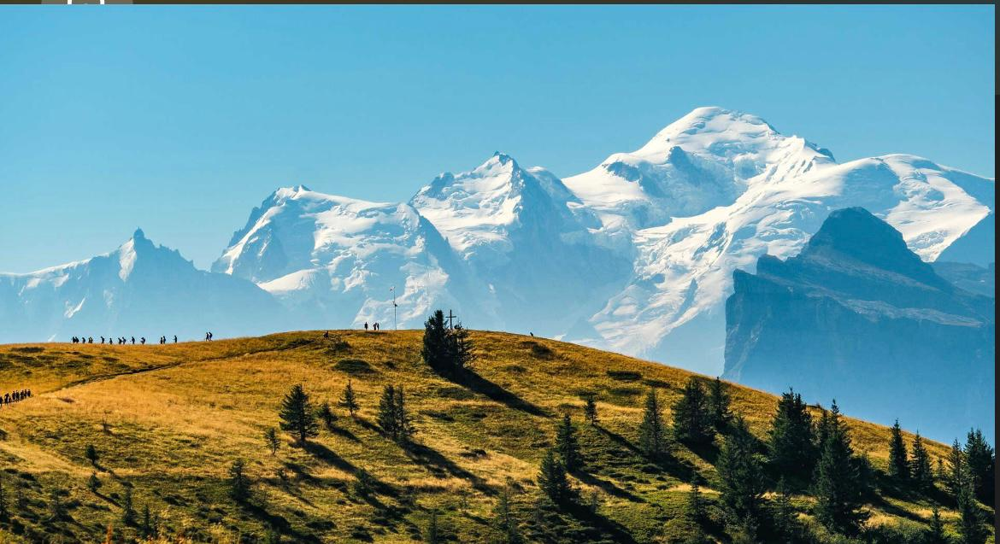
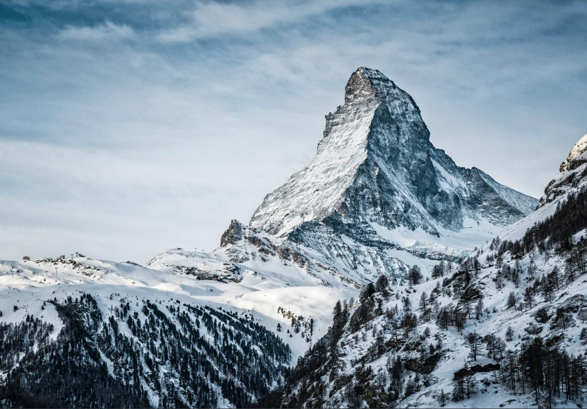
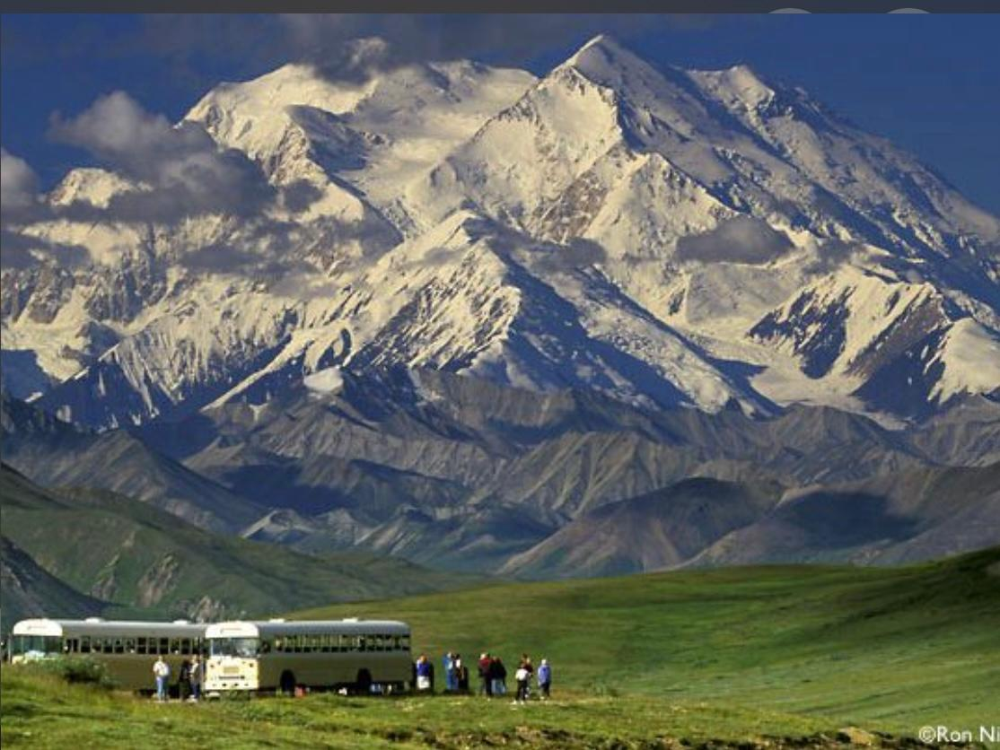
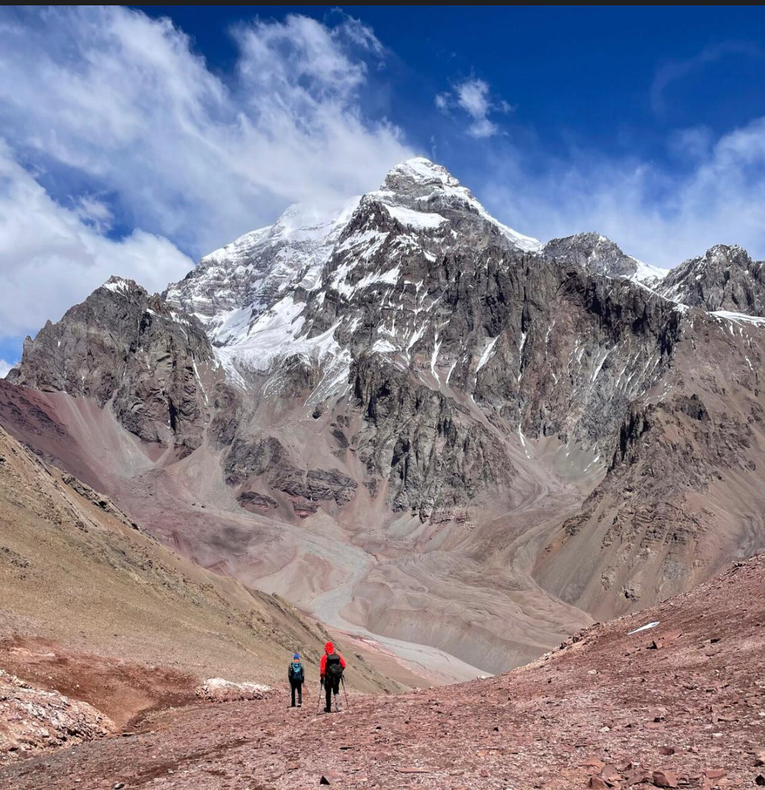

Mount Everest
Buurta ugu sarreysay adduunka. Dhererkeedu waa 8,849 mitir. Waxay ku taallaa Nepal iyo Tibet.

K2
Buurta labaad ee ugu sarreysa adduunka. Dhererkeedu waa 8,611 mitir. Waxay ku taallaa Pakistan.

Mount Kilimanjaro
Buurta ugu sarreysa Afrika. Dhererkeedu waa 5,895 mitir. Waxay ku taallaa Tanzania.

Mount Fuji
Buurta ugu caansan Japan. Dhererkeedu waa 3,776 mitir. Waa meel aad u qurux badan.

Mont Blanc
Buurta ugu sarreysa Yurub. Dhererkeedu waa 4,808 mitir. Waxay ku taallaa Faransiiska iyo Talyaaniga.

Matterhorn
Buur caan ah oo ku taalla Switzerland. Dhererkeedu waa 4,478 mitir. Waa astaanta Switzerland.

Denali
Buurta ugu sarreysa North America. Dhererkeedu waa 6,190 mitir. Waxay ku taallaa Alaska.

Aconcagua
Buurta ugu sarreysa South America. Dhererkeedu waa 6,961 mitir. Waxay ku taallaa Argentina.